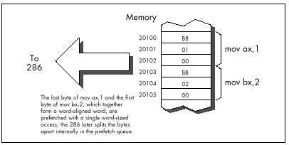
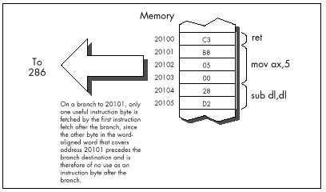

| Previous | Table of Contents | Next |
When I was developing the Zen timer, I used my trusty 10 MHz 286-based AT clone to verify the basic functionality of the timer by measuring the performance of simple instruction sequences. I was cruising along with no problems until I timed the following code:
mov cx,1000
call ZTimerOn
LoopTop:
loop LoopTop
call ZTimerOff

Figure 11.2 Word-aligned prefetching on the 286.

Figure 11.3 How instruction bytes are fetched after a branch.
Now, this code should run in, say, about 12 cycles per loop at most. Instead, it took over 14 cycles per loop, an execution time that I could not explain in any way. After rolling it around in my head for a while, I took a look at the code under a debugger...and the answer leaped out at me. The loop began at an odd address! That meant that two instruction fetches were required each time through the loop; one to get the opcode byte of the LOOP instruction, which resided at the end of one word-aligned word, and another to get the displacement byte, which resided at the start of the next word-aligned word.
One simple change brought the execution time down to a reasonable 12.5 cycles per loop:
mov cx,1000 call ZTimerOn even LoopTop: loop LoopTop call ZTimerOff
While word-aligning branch destinations can improve branching performance, it’s a nuisance and can increase code size a good deal, so it’s not worth doing in most code. Besides, EVEN inserts a NOP instruction if necessary, and the time required to execute a NOP can sometimes cancel the performance advantage of having a word-aligned branch destination.
| Consequently, it’s best to word-align only those branch destinations that can be reached solely by branching. |
I recommend that you only go out of your way to word-align the start offsets of your subroutines, as in:
even
FindChar proc near
:
In my experience, this simple practice is the one form of code alignment that consistently provides a reasonable return for bytes and effort expended, although sometimes it also pays to word-align tight time-critical loops.
So far we’ve only discussed alignment as it pertains to the 286. What, you may well ask, of the 386?
The 386 adds the issue of doubleword alignment (that is, alignment to addresses that are multiples of four.) The rule for the 386 is: Word-sized memory accesses should be word-aligned (it’s impossible for word-aligned word-sized accesses to cross doubleword boundaries), and doubleword-sized memory accesses should be doubleword-aligned. However, in real (as opposed to 32-bit protected) mode, doubleword-sized memory accesses are rare, so the simple word-alignment rule we’ve developed for the 286 serves for the 386 in real mode as well.
As for code alignment...the subroutine-start word-alignment rule of the 286 serves reasonably well there too since it avoids the worst case, where just 1 byte is fetched on entry to a subroutine. While optimum performance would dictate doubleword alignment of subroutines, that takes 3 bytes, a high price to pay for an optimization that improves performance only on the post 286 processors.
One side-effect of the data alignment cycle-eater of the 286 and 386 is that you should never allow the stack pointer to become odd. (You can make the stack pointer odd by adding an odd value to it or subtracting an odd value from it, or by loading it with an odd value.) An odd stack pointer on the 286 or 386 (or a non-doubleword-aligned stack in 32-bit protected mode on the 386, 486, or Pentium) will significantly reduce the performance of PUSH, POP, CALL, and RET, as well as INT and IRET, which are executed to invoke DOS and BIOS functions, handle keystrokes and incoming serial characters, and manage the mouse. I know of a Forth programmer who vastly improved the performance of a complex application on the AT simply by forcing the Forth interpreter to maintain an even stack pointer at all times.
An interesting corollary to this rule is that you shouldn’t INC SP twice to add 2, even though that takes fewer bytes than ADD SP,2. The stack pointer is odd between the first and second INC, so any interrupt occurring between the two instructions will be serviced more slowly than it normally would. The same goes for decrementing twice; use SUB SP,2 instead.
 | Keep the stack pointer aligned at all times. |
The DRAM refresh cycle-eater is the cycle-eater that’s least changed from its 8088 form on the 286 and 386. In the AT, DRAM refresh uses a little over five percent of all available memory accesses, slightly less than it uses in the PC, but in the same ballpark. While the DRAM refresh penalty varies somewhat on various AT clones and 386 computers (in fact, a few computers are built around static RAM, which requires no refresh at all; likewise, caches are made of static RAM so cached systems generally suffer less from DRAM refresh), the 5 percent figure is a good rule of thumb.
Basically, the effect of the DRAM refresh cycle-eater is pretty much the same throughout the PC-compatible world: fairly small, so it doesn’t greatly affect performance; unavoidable, so there’s no point in worrying about it anyway; and a nuisance since it results in fractional cycle counts when using the Zen timer. Just as with the PC, a given code sequence on the AT can execute at varying speeds at different times as a result of the interaction between the code and DRAM refresh.
There’s nothing much new with DRAM refresh on 286/386 computers, then. Be aware of it, but don’t overly concern yourself—DRAM refresh is still an act of God, and there’s not a blessed thing you can do about it. Happily, the internal caches of the 486 and Pentium make DRAM refresh largely a performance non-issue on those processors.
Finally we come to the last of the cycle-eaters, the display adapter cycle-eater. There are two ways of looking at this cycle-eater on 286/386 computers: (1) It’s much worse than it was on the PC, or (2) it’s just about the same as it was on the PC.
Either way, the display adapter cycle-eater is extremely bad news on 286/386 computers and on 486s and Pentiums as well. In fact, this cycle-eater on those systems is largely responsible for the popularity of VESA local bus (VLB).
The two ways of looking at the display adapter cycle-eater on 286/386 computers are actually the same. As you’ll recall from my earlier discussion of the matter in Chapter 4, display adapters offer only a limited number of accesses to display memory during any given period of time. The 8088 is capable of making use of most but not all of those slots with REP MOVSW, so the number of memory accesses allowed by a display adapter such as a standard VGA is reasonably well-matched to an 8088’s memory access speed. Granted, access to a VGA slows the 8088 down considerably—but, as we’re about to find out, “considerably” is a relative term. What a VGA does to PC performance is nothing compared to what it does to faster computers.
| Previous | Table of Contents | Next |